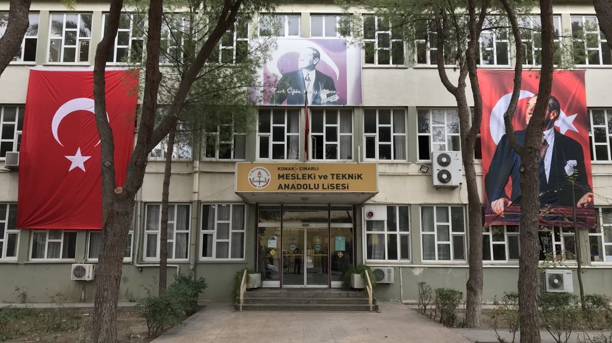

Çınarlı Mesleki ve
Teknik Anadolu Lisesi
T.C. MİLLÎ EĞİTİM BAKANLIĞI
İZMİR / KONAK - Konak Çınarlı Mesleki ve Teknik Anadolu Lisesi


BAĞLANTILAR
E-Okul Yönetim Bilgi Sistemleri Giriş Ekranı
MEB Bilişim Sistemleri Giriş Ekranı
E-Okul Veli Bilgilendirme Sistemi
E-Devlet Kapısı
444 0 MEB
İzmir Kültür Sanat
T.C. Millî Eğitim Bakanlığı

HABERLER
ÇINARLI’DAN YARDIM KAMPANYASINA DESTEK
Manisa BOSCH TERMOTEKNİK
LİSELER ARASI İZMİR BİLEK GÜREŞİ YARIŞMASI